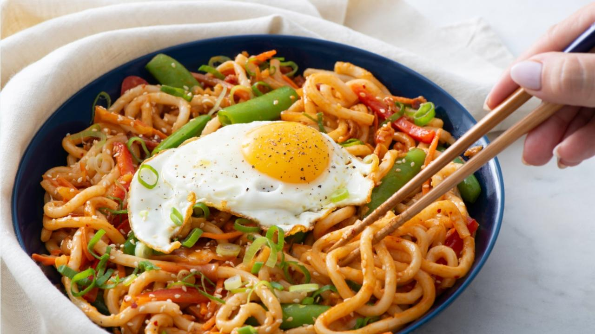

Kimchi udon

Description
This easy kimchi udon is loaded with kimchi, onion, pork belly, and udon noodles, all coated in an intensely
flavorful sauce to pamper your tastebuds. This one-pan meal is quick to make and calls for simple ingredients from
your fridge to make the best stir fried udon noodles in just 15 minutes.
Ingredients
- Udon noodles
- Onion
- Kimchi
- Pork belly
- Gochugaru
- Egg
Steps
- Add in the gochujang, soy sauces, sweetener or sugar, mayo, kimchi. sesame oil, sesame seeds, scallions,
tofu/protein, corn/other veggies/ and scallions.
- Mix together until the noodles are well coated. Cover the bowl and microwave again for 1-2 minutes or until
completely cooked to your liking.